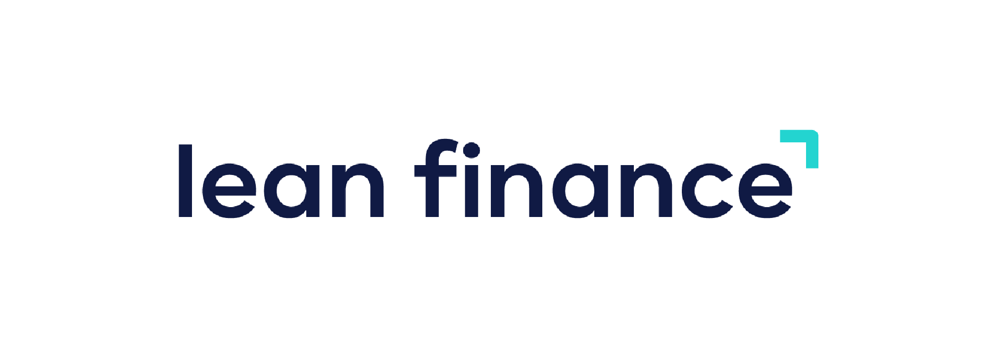
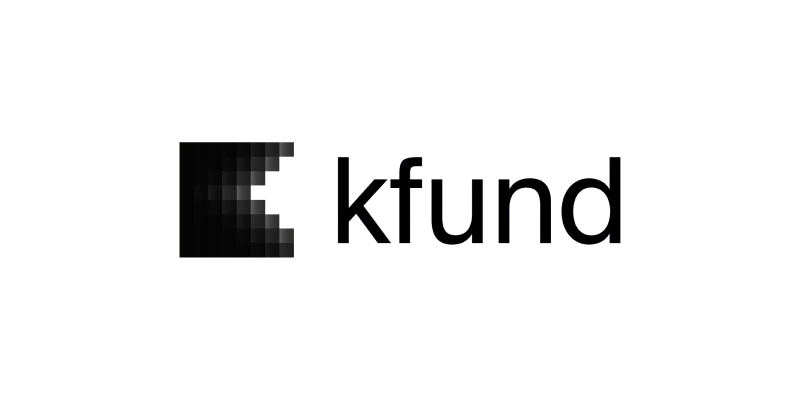

ENISA apalancadoen la ronda
Preparamos y tramitamos la solicitud de principio a fin.



Ventajas para startups participadas de K Fund · Lean Finance
La ronda que acabas de cerrar puede servirte para pedir un préstamo ENISA. Te decimos gratis si eres elegible y cuánto tiene sentido pedir.
Reserva tu diagnóstico ENISA gratuito01
ENISA es un préstamo participativo público. No pide garantías ni aval personal del founder, y el importe se calcula en función de los fondos propios de la empresa.
02
Justo después de una ronda tus fondos propios están en su punto más alto. Es el mejor momento para pedirlo y sumar deuda sin dilución al ticket de tus inversores.
Por ser participada
Preparamos y tramitamos la solicitud de principio a fin.
Elegibilidad, importe razonable y calendario de solicitud.
Con [condición preferente a definir].
Con [condición preferente a definir].
Cómo apalancar una ronda con ENISA.
Has cerrado ronda en los últimos meses y no has pedido ENISA.
Vas a preparar la siguiente ronda y tus números no aguantan una due diligence.
El founder sigue llevando las finanzas a ratos.
Tu reporting a inversores te cuesta días cada trimestre.
Préstamos participativos sin avales ni garantías personales.
Ventajas fiscales de la Ley de Startups.
Modelo financiero, valoración y documentación para inversores.
Para preparar la siguiente ronda, crecer o reestructurar, y para el reporting a inversores.
Asesoría fiscal y contable conectada: tus números al día, no a fin de trimestre.
Nóminas, contratos y Seguridad Social.
Societario, pactos de socios y contratos.